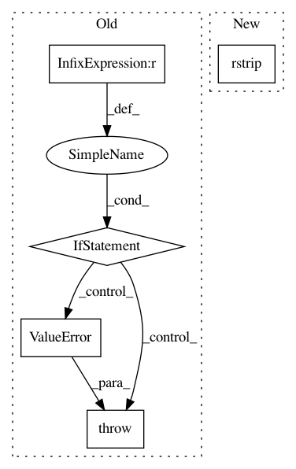

7cdb2074318a449647168fb087f2f2a775164863,sos/actions.py,,report,#Any#Any#Any#,574
Before Change
// file lock to prevent race condition
with fasteners.InterProcessLock("/tmp/report_lock"):
if input is not None:
if script is not None and script.strip():
raise ValueError("Please specify only one of parameter script and input: script={}, input={}".format(script, input))
if isinstance(input, str):
env.logger.debug("Loading report from {}".format(input))
with open(input) as ifile:
writer(ifile.read())
After Change
try:
env.logger.debug("Loading report from {}".format(ifile))
with open(ifile) as itmp:
writer(itmp.read().rstrip() + "\n\n")
except Exception as e:
raise ValueError("Failed to read input file {}: {}".format(ifile, e))
else:
In pattern: SUPERPATTERN
Frequency: 3
Non-data size: 5
Instances
Project Name: vatlab/SoS
Commit Name: 7cdb2074318a449647168fb087f2f2a775164863
Time: 2016-12-16
Author: ben.bog@gmail.com
File Name: sos/actions.py
Class Name:
Method Name: report
Project Name: vatlab/SoS
Commit Name: b72e0df77218fb3e8cb938fe344c3412ccb65bd4
Time: 2016-12-16
Author: ben.bog@gmail.com
File Name: sos/actions.py
Class Name:
Method Name: report
Project Name: mynlp/ccg2lambda
Commit Name: 66a06524eba0b22d14204baeb2ca6d4c9db7d1d0
Time: 2017-05-12
Author: pascual@nii.ac.jp
File Name: scripts/semantic_types.py
Class Name:
Method Name: convert_coq_to_nltk_type